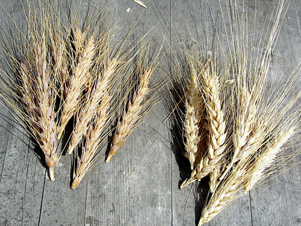
Heads of home-grown wheat
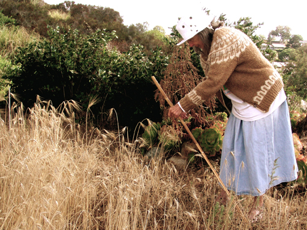
La Jolla resident harvests backyard wheat
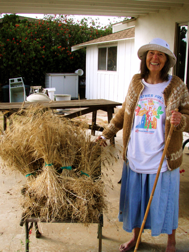
Harvest from a La Jolla wheat field
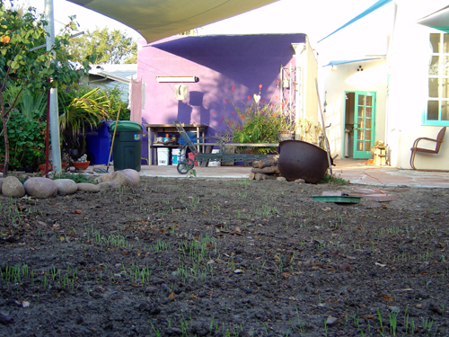
21 October 2007, First Planting
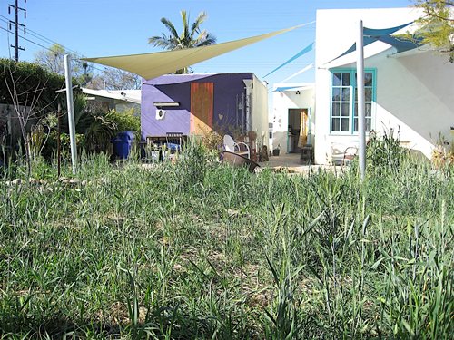
3 February 2007
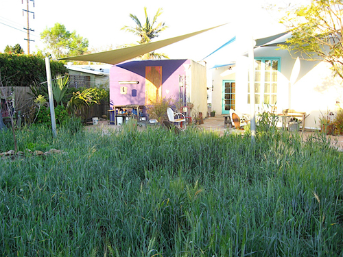
1 March 2007
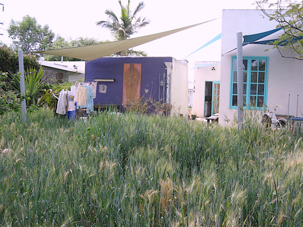
8 April 2007
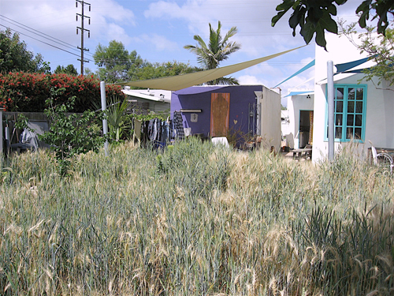
4 May 2007
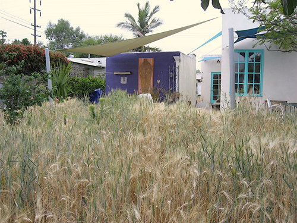
20 May 2007
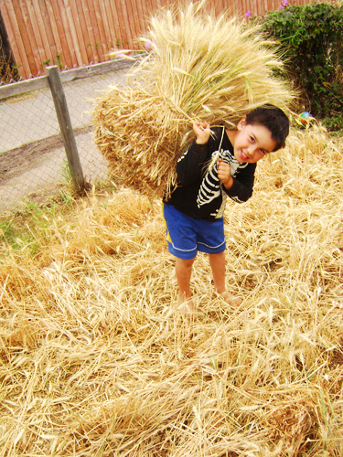
A young volunteer carries his weight in wheat
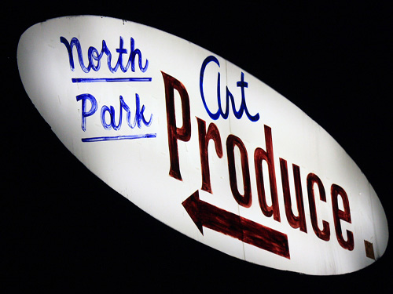
Art Produce Gallery installation site
(Photo courtesy of Hilary Dufour)
Previous